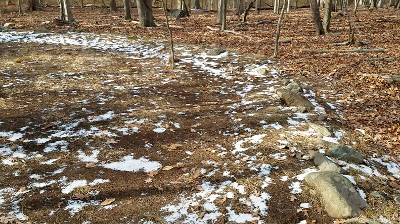
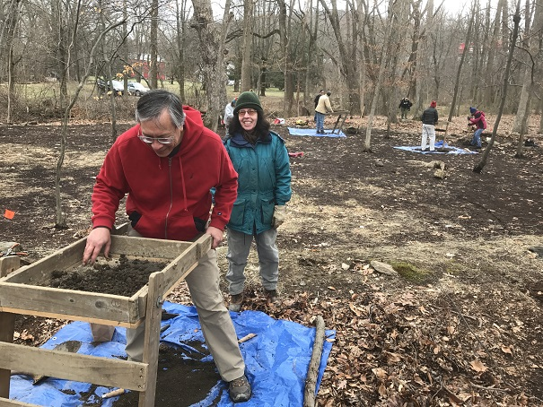
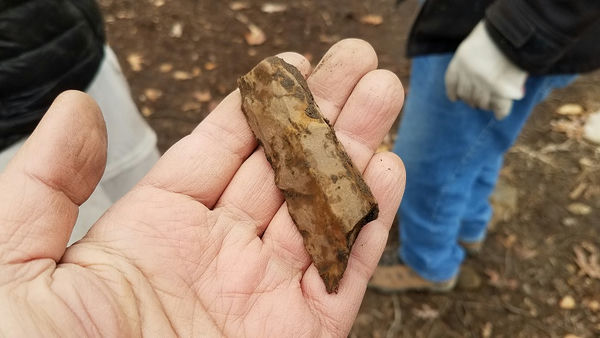

The Research and Special Projects Committee helps NEARA members do their own research by soliciting, recommending, and funding projects, and by setting guidelines and standards. It is responsible for maintaining the Site Files. It also does various kinds of special projects for NEARA.
Many NEARA members conduct their own research by exploring, finding, and recording sites with interesting lithic structures. Or they do research by reading extensively about particular archaeological, anthropological, or historical subjects or techniques.
If you have a particular interest, perhaps the Research and Special Projects Committee can help by providing suggestions or making contacts. And if your project is interesting enough and beneficial to NEARA, we may be able to enhance the project and provide some funding.
So if you are a member of NEARA and would like some help on a particular project that you are doing, contact us at research@neara.org. We are always looking for good project ideas.
If you would like to contribute $ to a research project, please donate at: Donate.
Tom Elmore shares his video about NEARA's project to make a 3D LiDAR scan of Newport Tower.
We had a wonderful webinar on using relatively new technologies together for recording, preserving, and exploring sites:
The webinar happened on Friday 19 March 2021, but you can watch the recorded session at: Triad of Technologies video.
NEARA is conducting an ambitious project to use OSL dating at many well-known sites throughout the Northeast. Read about it at OSL dating project.
For an introduction to luminescence dating for archaeology and geology, please read: User Guide to Luminescence Sampling.
Here's an article about OSL dating of stone alignments: Dating Stone Alignments by Luminesence.
Walter van Roggen, May 2017, adapted from a Fall 2017 Transit article.
Vera Cruz is a village in Pennsylvania best known for its jasper quarries, just south of Allentown. See this article from 1893: Jasper Mines. Read about Jasper Park at Jasper Park.
A landowner discovered a stone circle on his property near Jasper Park. It is about 18 meters in diameter and includes some smaller circular features inside it. Larry Mulligan, our Pennsylvania coordinator, proposed an investigation. The Research Committee reviewed the available documentation and did our own background research. We decided to proceed with funding and participating in the project.
An experienced local archaeologist, Thomas Lewis, performed a Phase I investigation, doing background research and digging 12 shovel test pits (STPs) inside and around the stone circle. NEARA volunteers also participated in the investigation by digging 11 more STPs around the circle and helping map the circle.
The historical research discovered that there were no recorded constructions in the immediate area of the stone circle. The owners of this plot of land had been farmers in the 1800s, but there are many rocks on the surface of the land around the circle and the stratigraphy shows that the soil at the circle has not been plowed. The site is adjacent to a stream on two sides.
The circle consists of a ring of stones mostly of a size less than one half meter in diameter. The stones do not appear contiguously or uniformly around the whole circle. The most substantially built constructions that were exposed involved courses of dry laid stones to a depth of about half a meter. Other sections of the circle had fewer stones and even gaps between them.
The 360 recovered prehistoric artifacts include: 355 pieces of debitage, 2 cores, 1 scraper, and 2 early stage bifaces. Almost all were made of jasper. So the site was clearly a lithic workshop for producing stone tools. However none of the artifacts were diagnostic, so we were unable to determine their approximate age or the identity of their manufacturers. Furthermore this Phase I investigation was unable to directly associate the construction of the stone circle with the lithic artifacts found all about it.
The NEARA volunteers had a great time meeting new people, discovering artifacts, and discussing theories about the site. This was the Research Committee’s third field event in three years.
Read Thomas Lewis's article in the Journal: "ARCHAEOLOGICAL STONE CIRCLE INVESTIGATIONS", NEARA Journal vol. 51.1, Summer 2017.
Walter van Roggen, February 2018
NEARA’s Research Committee is more than just about helping people do their research on lithic features – it is also responsible for Special Projects and for maintaining site information. As it so happens, we are now undertaking our largest project in recent memory, and it is a Special Project that also involves maintaining site information. That project is to digitize all of NEARA’s site reports that we have collected since the 1960’s and then make them available online to researchers.
Why is it so important to do all this work? For decades the only way to read a bunch of site reports was to visit the library, which was inconvenient for people outside of the Concord New Hampshire area. Once the old reports are digitized, they can be shared over the internet, either by email or on a web site. After they have been OCR’ed (Optical Character Recognition) into a textually searchable format, they can be searched easily along with new reports which will all be digital. Making a copy of the physical reports will also help preserve the information. The board approved this project about a year ago.
This project involves scanning most of the contents of five filing cabinets plus the files of those chapter coordinators who wanted their own files to be scanned. As of this writing, our two highly trained and extremely dedicated volunteers working part-time have gathered over the past year about 280 GB of digital data, consisting of 80227 files in 15213 folders.
The next phase, which we have already started, involves organizing the files into a more uniform folder structure that is consistent for all of the sources of information and that can be used when we make the contents available in various manners via a web site. Alas there are some documents and many slides that have few clues about where they belong.
Since some sites may be known by various names over time, for its location or its owner or its construction or its unusual features, we are identifying as many sites as we can with a unique identifier and organizing by the one feature which should not change over time – its location. In the long run identifying each site with a number will also help our efforts to protect its precise location when the name might otherwise give too much of a clue where it is.
Another phase will be to create searchable PDF documents from sequences of photographs produced by scanning various typed or printed documents.
The following phase will be to create a private GIS database and web server. Users will need to login and may need special permission in order to read all the details of most sites, depending on the needs of their research.
Finally, we intend to offer a way for users to report and document sites. There are many sites that currently have no site report in the library. For many people their contribution might just be to provide some photos of a visit. Eventually we hope almost every site will build up a series of photos over time. But we expect many of those people will also add some more textual information – descriptions, measurements, comparisons, and other commentary.
Ultimately, the goal is to create a great online resource for serious people wishing to learn about certain sites and wanting to help add to our knowledge about those sites. It will take some time, but we will get into the 21st century.
Update, March 2020: We have finished scanning the Site Files and are scanning the notes and correspondence of various researchers who have donated their materials to the NEARA Archives. See the results at SiteDB.org. For an introduction to the site, please read Introduction.